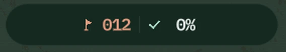

Minesweeper strategy and patterns
Eight reads that turn minesweeper into a logic game, and the two ways a strait board changes them.
Every move is either a deduction or a guess. These eight reads are the deductions that come up on every board, in the order you meet them. Learn to see them without counting and your times fall by half.
1. The satisfied number
A number touching exactly as many hidden tiles as its value is satisfied: they are all mines. Flag them, then check every number those flags touch. One of them is usually satisfied now too. That is how chains start.
2. The 1-1 on an edge
Two 1s along an edge. The left 1 sees two hidden tiles, the right 1 sees those two plus one more. The same mine satisfies both, so the extra tile is safe. Works whenever two equal numbers overlap and one sees exactly one tile the other cannot.
3. The 1-2-1
The 2 needs two of its three hidden tiles. If the middle one were a mine, both 1s would be satisfied and the 2 could never reach two. So the middle is safe and the outer two are mines. The most common pattern in the game.
4. The 1-2-2-1
The cousin of the 1-2-1. Mines under the two 2s, safe tiles under the 1s. Both patterns still work across a flag or an edge, as long as the hidden tiles line up.
5. Corners and coves
Numbers near an edge see fewer tiles, so each one says more. A corner 1 with two hidden neighbours narrows a mine to two places; the next number along usually decides it. On a strait board every cove is a corner, so the coastline is where boards get solved.
6. Count the mines

Late in a board, when the local numbers look ambiguous, use the counter. Three tiles left and one mine unaccounted for means any number asking for two of them is wrong, so one of your flags is. Zero mines left means everything remaining is safe: tap it all.
7. Chord through the easy parts
3 flags on a 3, then tap the 3
Once a number's flags add up, tap the number and every other tile around it opens at once. With honest flags it turns a solved region into a cascade. With a wrong flag it ends the game, which is why flags mean certainty.
8. Open water first
A first tap in the widest channel is the most likely to hit a zero and cascade. A tap in a narrow inlet gives you one number and nothing to compare it with. Start wide, then work toward the coast.
What changes on a strait board
On a rectangle every interior tile has eight neighbours. Against the coast, a tile might have three or four. Two things follow:
- Numbers near land are stronger. A 2 with three hidden neighbours is nearly satisfied; a 1 with one is decided. Coves resolve fast.
- Narrow passages are chokepoints. Logic on one side of a one-tile pinch cannot help the other side until the pinch is resolved. Clear the pinch and the far side opens.
So sweep the coast early: open the channel, then run the shoreline, where most numbers are decided on sight.
When you truly cannot tell
On a no-guess board you always can: a logical path from your opening is guaranteed. The move you are missing is usually one of the patterns above in a rotation you have not learned, or a mine count. On boards without that guarantee, mark both candidates, work elsewhere, and come back. Guess last, and guess the tile that reveals the most if it is safe.
Practise on a strait board